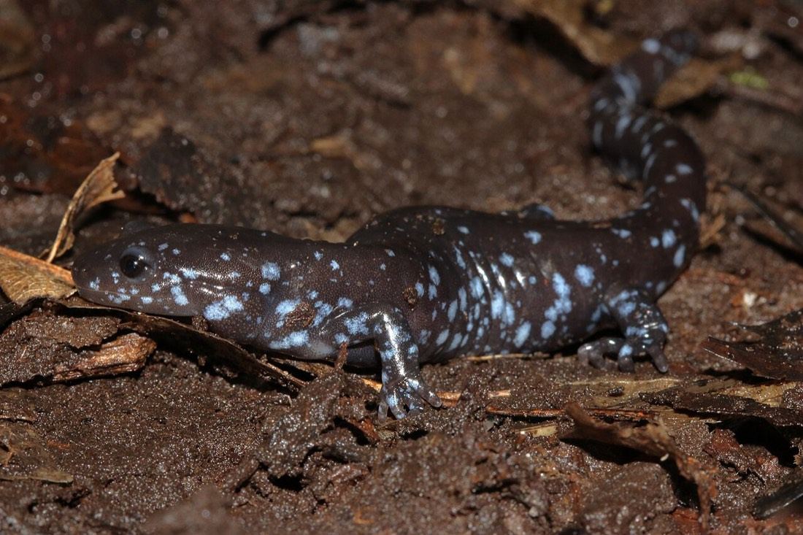
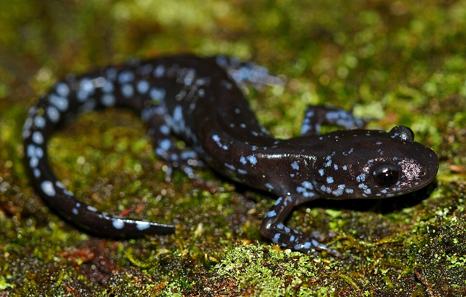

Blue-spotted Salamander
Ambystoma laterale


- Kind
- amphibian
- Native to Vermont
- yes
- Legal status
- Listed as a "species of special concern" in Vermont and tagged "Vulnerable" (Vermont Fish & Wildlife); the Atlas gives state Natural Heritage rank S3 (uncommon, localized). The state page cites no statute. (checked 2026-10-31)
- Look-alikes
- Jefferson salamander (the two hybridize, and the pages give no field marks to separate them)
Names
Blue-spotted Salamander, Ambystoma laterale.
Range and habitat
The smallest of Vermont's three mole salamanders. Lower elevations in or near floodplains, semi-permanent pools, marshes, shrub swamps and forested red maple and cedar swamps; mainly in the Champlain lowlands, with scattered populations elsewhere. Outside the breeding season it lives mostly underground in cool woods, under leaves, rotting wood, rocks, old stone walls or small-mammal burrows (state page).
How to identify (by season; look-alikes and the key difference)
- Size: to five inches (Vermont Fish & Wildlife); a large Vermont adult averages 4.1 inches (Atlas).
- Color: black, with small light blue spots on the back and sides; field guides compare it to old-fashioned enamel cookware (state page).
- Look-alike: the Jefferson salamander (Jefferson Salamander); the two hybridize and a wide variety of hybrids occur, so identification can be difficult.
Through the year
No calendar entries: Neither page gives breeding months for this species. The state page gives "late March and early April" for the spotted salamander's migration to vernal pools (Spotted Salamander).
Role and management
Vermont Fish & Wildlife says salamanders overall are abundant but numbers are declining, mainly from the loss of habitat such as vernal pools. Males deposit white spermatophores in shallow water and females take them up internally; pure blue-spotted salamanders lay single gelatinous eggs. It eats beetles, earthworms, slugs, spiders, mites and mosquito larvae. The page lists a reptile and amphibian atlas, biological inventories, a vernal pool habitat study and large-scale land conservation as the work under way. Vernal pools and how a pool counts under Current Use are in Wood Frog and R-VT-004 Vernal Pool ESTA.
What helps it thrive (light, soil, shelter, food and the trees it uses)
- Water, shade and cover (the Guide, chapter 30). Most reptiles and amphibians need water for some stage of their life: conserve streams, ponds, wetlands and vernal pools. Frogs, toads and most salamanders lay eggs in water; many breed in temporary vernal pools free of fish, where the young change from egg to larva to adult in one summer if the pool stays wet (dry years give few eggs or hatchlings). Keep intact forest buffers along water, rock walls, brush piles, downed trees and hollow stumps; leave intact leaf litter and rotten logs; leave coarse woody debris when working in the woods ('woods that look like city parks are not good habitat'); keep streams shaded and free of sediment with a naturally vegetated buffer for night-time feeding; abundant shade keeps the woods cool and moist.
- This species: one of Vermont's ten salamander species named in the Guide, which says salamanders in general lay eggs in shallow wetlands and vernal pools and shelter in leaf mold and decaying logs. For vernal pool buffers see Wood Frog.
Legal status
The state page lists it as a species of special concern and states no specific harvest, possession or habitat-protection rule for it. Confirm with the county forester and the Wetlands program before working near a pool (Wood Frog).
Sources
- Vermont Fish & Wildlife Department, Blue-spotted Salamander: https://vtfishandwildlife.com/learn-more/vermont-critters/amphibians/blue-spotted-salamander
- Vermont Reptile and Amphibian Atlas, Blue-spotted Salamander species summary (Ariel K. McK. Burgess): https://www.vtherpatlas.org/herp-species-in-vermont/ambystoma-laterale/
- Vermont Fish & Wildlife Department, A Landowner's Guide, Wildlife Habitat Management for Lands in Vermont, chapter 30 (Reptiles and Amphibians): https://vtfishandwildlife.com/sites/fishandwildlife/files/documents/Learn%20More/LandownersGuide/Landowner-Guide-Complete.pdf
Vermont Woodland Owner's Reference, built 2026-11-11. Rules and dates here are summaries, not legal advice; dates shift with elevation and year. Photo and recording credits · The text is by Loop Works, CC BY 4.0 (pictures and recordings keep their own licenses)